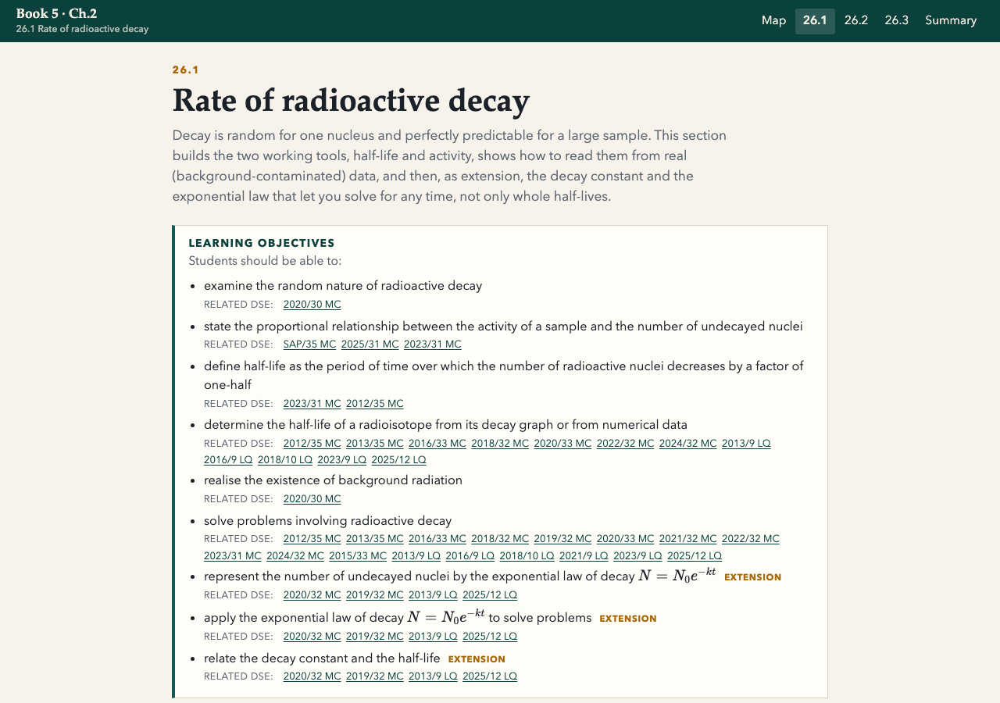

One learning path per page
Each 25.1 to 26.3 page starts with its syllabus objectives, then teaches a connected sequence of visual, definition, worked reasoning and check.
See 25.3Review surface · Active Physics Book 5
A focused review of the Book 5 Ch.1 and Ch.2 overhaul: visual hierarchy, exam-grade checks, self-contained coverage and topic-matched DSE practice in every student subsection.
Each 25.1 to 26.3 page starts with its syllabus objectives, then teaches a connected sequence of visual, definition, worked reasoning and check.
See 25.3Questions distinguish activity from dose, X-rays from electron beams, background from source count, and α's internal and external risks.
See 26.1Every student subsection ends with compact skill cards and one directly embedded, topic-matched paper. Related questions remain linked for a focused next step rather than a chapter-end dump.
See 26.2Role-selection controls above comparison tables encouraged clicking a label just to highlight the matching row. The visual action did not teach an exam decision and competed with the table itself.
Tables are plain, scannable reference material and wide tables scroll cleanly on a narrow screen. Syllabus links are a quiet “Related DSE” line rather than a chip cloud. Controls remain only where they alter an observable process: an absorber sequence, a cloud-chamber track, a detector input or a finite animation replay.
Nuclide notation, balanced α/β/γ equations, decay-series counting and the distinction between a daughter and a vanished atom.
25.2Film badge, GM count rate, cloud chamber, absorber logic, background floor and electric or magnetic deflection are connected as evidence.
25.3Whole and fractional half-lives, corrected data, \( A = kN \), exponential decay, unit consistency and nuclei from mass.
26.1Radiation type, half-life and chemistry are justified for tracers, therapy, gauges, irradiation and C-14. Equivalent dose is separated from effective dose, with targeted α therapy treated as a purposeful exception to diagnostic tracers.
26.2 - 26.3
Review the pages as an HKDSE student would: scan a table, explain a choice in a full sentence, then open the matching DSE item. In particular, check that: